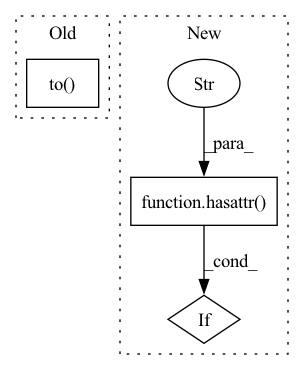

Pattern ID :12645
Before Change
if std is not None:
self.std = std.detach().clone().to(self.device)
elif var is not None:
self.std = torch.sqrt(var + self.eps).detach().clone().to( self.device)
self._initialized = True
def transform(self, x: torch.Tensor, inverse: bool=False):After Change
if std is None and var is None:
raise ValueError("Either std or var must be provided when initializing StaticNormalizer!")
if hasattr( self, "mean" ) :
self.mean.data = mean.detach().clone()
else:
self.register_parameter("mean", nn.Parameter(mean.detach().clone(), requires_grad=False))In pattern: SUPERPATTERN
Frequency: 6
Non-data size: 3
Instances Fragment ID: 42913389
Project Name: typoverflow/utilsrl
Commit Name: db95d8662ab7ae60ae347f5c376212dcb7e5c8a4
Time: 2022-05-12
Author: typoverflow@outlook.com
File Name: UtilsRL/net/normalizer.py
M Class Name: StaticNormalizer
N Class Name: StaticNormalizer
M Method Name: _initialize(4)
N Method Name: _initialize(4)
M Parent Class: BaseNormalizer,nn.Module
N Parent Class: BaseNormalizer
M File Name: UtilsRL/net/normalizer.py
N File Name: UtilsRL/net/normalizer.py
M Start Line: 138
M End Line: 144
N Start Line: 121
N End Line: 141
Before Change
results = {}
batch_size, rest_shape = sample.shape[0], sample.shape[1:]
sample = sample.to(device="cpu")
// Prepare sample with batch size 1
sample1_shape = (1, *rest_shape)
sample1 = torch.randn(sample1_shape)After Change
sample1 = torch.randn(sample1_shape)
prevously_training = getattr(model, "training", False)
if hasattr( model, "eval" ) :
model.eval()
// Get machine info Fragment ID: 42913400
Project Name: lukashedegaard/pytorch-benchmark
Commit Name: 16ca37984744f4adb1c9a75bb64dde6de261a1dc
Time: 2022-02-11
Author: lh@eng.au.dk
File Name: pytorch_benchmark/benchmark.py
M Class Name: AnonimousClass
N Class Name: AnonimousClass
M Method Name: benchmark(8)
N Method Name: benchmark(4)
M Parent Class:
N Parent Class:
M File Name: pytorch_benchmark/benchmark.py
N File Name: pytorch_benchmark/benchmark.py
M Start Line: 235
M End Line: 299
N Start Line: 275
N End Line: 380
Before Change
-------
Tensor of shape `[batch, time]` or `[batch, channels, time]`.
waveform = waveform.to( self.device)
// Don"t do anything if the frequencies are the same
if self.orig_freq == self.new_freq:
return waveformAfter Change
-------
Tensor of shape `[batch, time]` or `[batch, channels, time]`.
if not hasattr( self, "first_indices" ) :
self._indices_and_weights(waveforms)
// Don"t do anything if the frequencies are the same Fragment ID: 42913401
Project Name: speechbrain/speechbrain
Commit Name: bc6a411621d42f8517b5888d097bdf4d20ba58fe
Time: 2020-04-24
Author: plantinga.peter@gmail.com
File Name: speechbrain/processing/speech_augmentation.py
M Class Name: Resample
N Class Name: Resample
M Method Name: forward(2)
N Method Name: forward(2)
M Parent Class: torch.nn.Module
N Parent Class: torch.nn.Module
M File Name: speechbrain/processing/speech_augmentation.py
N File Name: speechbrain/processing/speech_augmentation.py
M Start Line: 517
M End Line: 517
N Start Line: 494
N End Line: 498
Before Change
min: torch.Tensor,
max: torch.Tensor
):
self.min = min.detach().clone().to( self.device)
self.max = max.detach().clone().to(self.device)
self._initialized = True
def transform(self, x: torch.Tensor, inverse: bool=False):After Change
self.min.data = min.detach().clone()
else:
self.register_parameter("min", min.detach().clone())
if hasattr( self, "max" ) :
self.max.data = max.detach().clone()
else:
self.register_parameter("max", max.detach().clone()) Fragment ID: 42913382
Project Name: typoverflow/utilsrl
Commit Name: db95d8662ab7ae60ae347f5c376212dcb7e5c8a4
Time: 2022-05-12
Author: typoverflow@outlook.com
File Name: UtilsRL/net/normalizer.py
M Class Name: MinMaxNormalizer
N Class Name: MinMaxNormalizer
M Method Name: _initialize(3)
N Method Name: _initialize(3)
M Parent Class: BaseNormalizer,nn.Module
N Parent Class: BaseNormalizer
M File Name: UtilsRL/net/normalizer.py
N File Name: UtilsRL/net/normalizer.py
M Start Line: 191
M End Line: 193
N Start Line: 171
N End Line: 182
Before Change
def to(self, device):
if isinstance(device, (str, torch.device)):
self.device = device
return super().to( device)
def from_hyper_parameter(self, hp):
ret_self = self.__class__(
num_features=self.num_features,After Change
def to(self, device):
if isinstance(device, (str, torch.device)):
self.device = device
if hasattr( self, "model" ) and self.model is not None and isinstance(self.model, torch.nn.Module):
self.model.to(self.device)
return self
Fragment ID: 42913396
Project Name: thumnlab/autogl
Commit Name: 3d8e9d1847039ec2c5889b6a12f9fb49d44684af
Time: 2021-04-13
Author: null
File Name: autogl/module/model/base.py
M Class Name: BaseModel
N Class Name: BaseModel
M Method Name: to(2)
N Method Name: to(2)
M Parent Class:
N Parent Class: torch.nn.Module
M File Name: autogl/module/model/base.py
N File Name: autogl/module/model/base.py
M Start Line: 49
M End Line: 49
N Start Line: 51
N End Line: 54
Before Change
safety_checker=None,
feature_extractor=self.dummy_extractor,
)
sd_pipe = sd_pipe.to( torch_device)
sd_pipe.set_progress_bar_config(disable=None)
source_prompt = "An astronaut riding a horse"
prompt = "An astronaut riding an elephant"After Change
def test_stable_diffusion_cycle_fp16(self):
components = self.get_dummy_components()
for name, module in components.items():
if hasattr( module, "half" ) :
components[name] = module.half()
pipe = CycleDiffusionPipeline(**components)
pipe = pipe.to(torch_device) Fragment ID: 42913395
Project Name: huggingface/diffusers
Commit Name: 02d83c9ff1b93f2c6f9c94f9369b3e4bc1ba8ce7
Time: 2022-12-06
Author: anton@huggingface.co
File Name: tests/pipelines/stable_diffusion/test_cycle_diffusion.py
M Class Name: CycleDiffusionPipelineFastTests
N Class Name: CycleDiffusionPipelineFastTests
M Method Name: test_stable_diffusion_cycle_fp16(1)
N Method Name: test_stable_diffusion_cycle_fp16(1)
M Parent Class: unittest.TestCase,PipelineTesterMixin
N Parent Class: unittest.TestCase,PipelineTesterMixin
M File Name: tests/pipelines/stable_diffusion/test_cycle_diffusion.py
N File Name: tests/pipelines/stable_diffusion/test_cycle_diffusion.py
M Start Line: 207
M End Line: 253
N Start Line: 133
N End Line: 142